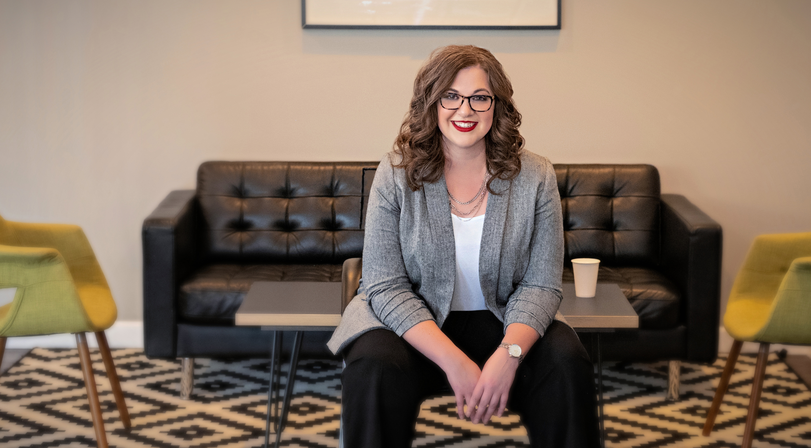
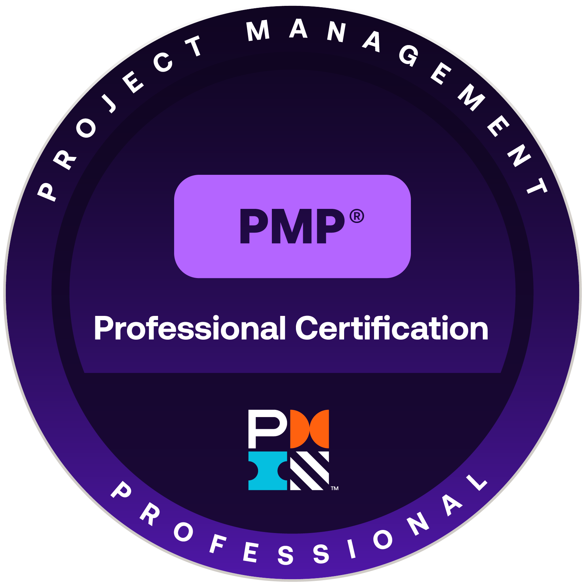

{{ s.no }}
{{ s.title }}
{{ s.body }}
You didn't start a company to run every launch, hire, and process fix personally. I'm the extra set of hands who gets your team's initiatives across the finish line – on time, on budget, and without everything running through you.

Somewhere between 15 and 100 people, the thing that made your company work – you, holding every project's status in your head – starts being the reason things slip. The launch stalls because nobody owns the next step. The reorg drags because no one's tracking who's supposed to do what by when. You know the work is logical. It's the execution that's the problem.
That's the gap I fill. I'm a project manager with over a decade of hands-on experience running campaigns, product launches, team restructures, tool rollouts, and process changes for growing teams – the kind of work that needs a dedicated owner, not another item on your own to-do list.
“Sarah was always the one who kept an eye on the details: she's a logistics whiz who usually had the best suggestions for how to get from points A-to-Z, and everywhere in between.”
Chris Kahn – Founder & Principal Consultant, Signal & Story
You've probably had a consultant sell you a framework and vanish before anything shipped. That's not how I work. I plug in as a working project manager – hands-on with your team, not observing from the outside – and I stay through execution, not just the planning phase.
{{ p.body }}
Not ready to hand off a full project? I also offer standalone Project Readiness Reviews and Post-Launch Check-Ins for a lighter-lift way to get an experienced PM's eyes on the work.
I've spent a decade as the person actually running the projects that determine whether or not a growing team's plans drive real outcomes. Here's where founders bring me in:
{{ s.body }}
Have a project that doesn't fit neatly into a category above? I'd still love to hear about it.
“I was lucky enough to collaborate with Sarah on a major project which she was leading. Our work was closely watched by leadership and there was about as many stakeholders as there were teams at the company, but Sarah managed it deftly. Her communication – both within our working group and to others – was impeccable.”
“Sarah did a fantastic job of helping us bring our content platform to life across many different content vehicles: collateral, blog posts, PR, videos, and speaking engagements, among others. She was an excellent thought partner, and brought structure to our content efforts by setting up tools, processes, and guardrail documents to help our team work efficiently.”
I've run projects inside fast-growing teams across financial services, SaaS, consumer software, and more – not advised from the outside. A few examples of the kind of work I take off founders' plates:
{{ c.work }}
View NowBased in Ann Arbor, MI, Sarah Gage brings over a decade of hands-on project management experience across a strikingly varied set of fast-moving industries – from financial media and digital marketing agencies to SaaS, consumer software, and executive security.
She holds PMP and Workshopper Master Facilitator certifications and is an MBA candidate at the University of Illinois Urbana-Champaign.
